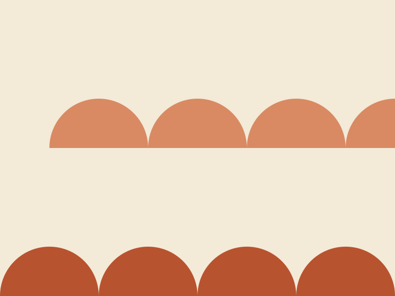
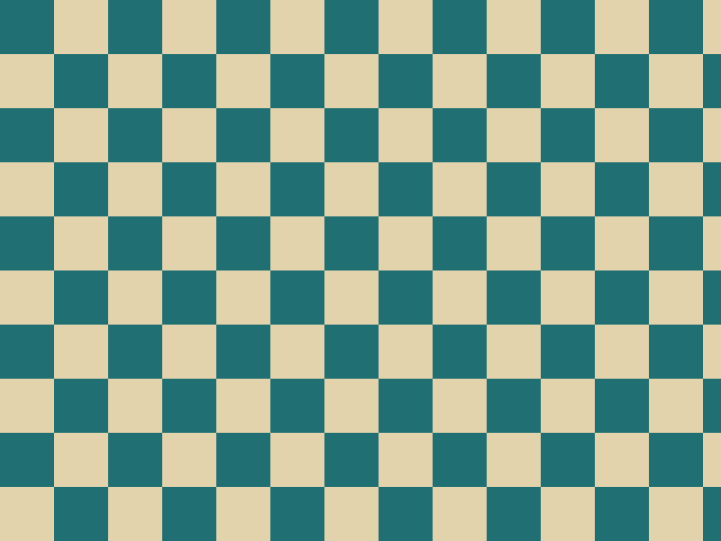

Fashion
A coat built from six undyed wools
At Hollowbrook Mills, a winter coat is assembled from the natural shades of six fleeces, and nothing is dyed.
Invented magazine. The Weft Review is an invented magazine for a research replica. None of its stories, bylines, brands, events or places are real, and all dates are sample data.
Every story in the sample archive, newest first. Use the filters to narrow the list.
Fashion
At Hollowbrook Mills, a winter coat is assembled from the natural shades of six fleeces, and nothing is dyed.

Culture
Forty restored looms, one working weave shed and a very quiet gift shop.

Travel
Madder, weld and woad: a walking itinerary through gardens grown for colour.

Fashion
Atelier Nimbrel sets every fold by hand against a numbered paper template.
Video
A four-minute look at how a hall was hung with two hundred metres of fabric.
Video 4:12, demo only (not playable)
Culture
Small labels are stitching their seasonal books by hand, with swatches tipped in.

Fashion
Two dips, a day of air and a second dip: why one dye house refuses to hurry blue.

Travel
A map of six haberdashery counters, a market stall and one very narrow shop.
Next Wave
Eight invented students, eight small collections, and the cloths they chose.
Fashion
A crisp, light weave is turning up in collars, cuffs and long overshirts.
Video
A macro film of a needle passing through linen, set to the sound of the workroom.
Video 0:30, demo only (not playable)
Culture
Fragile, faded and irreplaceable: a plan to preserve cloth samples as colour data.
Fashion
Horn, shell, brass and glass: a visit to the drawers of Pellam & Roe Trims.
Travel
A slow line across moorland, with stops at three mills that welcome visitors.
Culture
Wenna Thackray talks paper, chalk and the thread that decides how a garment hangs.
Fashion
Three colours that keep appearing on mood boards, and the cloths that carry them best.
Video
Time-lapse of a pleated length being released from its paper template.
Video 1:48, demo only (not playable)
Travel
Saturday mornings among the cloth ends, thread cones and ribbon reels.

Fashion
Contrasting stitches, patched elbows and a repair counter that is part of the shop.

Culture
Tubs, triangles and squares: where the little pictograms on a label came from.
Next Wave
Fold, staple, trim: a beginner guide to a lookbook you can photocopy.
Fashion
Our notebook from the opening day of an invented week of mills, makers and cut cloth.
Culture
Six invented makers, six pieces of cloth, and the jury notes on each.
Travel
Chimneys, canals and a surprisingly good bakery near the weave shed.
Fashion
Why linen wrinkles, how it recovers and which weaves forgive the most.
Next Wave
How to run an evening session where participants rework old cloth into new bags.
Culture
Shears, steam, a radio in the next room: an essay on the ambient music of making.
Travel
Five garments in tough, quick-drying cloth for a week of wet weather.
Next Wave
A short checklist for choosing a basic machine, with no brand names attached.
Try a shorter keyword or choose another topic.